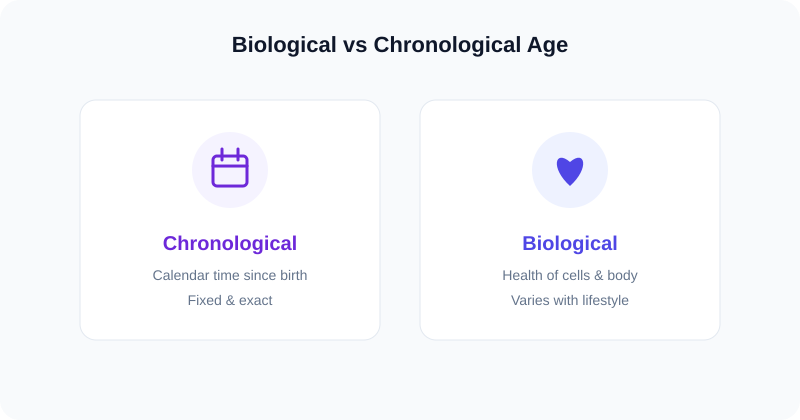

Explainer
Biological Age vs Chronological Age
Your biological age vs chronological age can tell two different stories. Chronological age is the fixed calendar count since birth; biological age estimates how old your body actually behaves. Here is how they differ and how each is measured.

Key takeaways
- Chronological age = calendar time since birth (use our calculator).
- Biological age = an estimate of physiological condition.
- Lifestyle can push biological age above or below chronological age.
What is chronological age?
Chronological age is the exact amount of calendar time that has passed since your date of birth. It advances at the same rate for everyone and is computed by subtracting your birth date from today — the job of a chronological age calculator.
What is biological age?
Biological age is an estimate of how old your body appears based on physiological markers — things like cardiovascular fitness, blood biomarkers, and increasingly DNA-methylation "epigenetic clocks." Unlike chronological age, it is not fixed: two people born on the same day can have quite different biological ages.
Side-by-side comparison
| Chronological age | Biological age | |
|---|---|---|
| Based on | Calendar dates | Health & physiology |
| Changes with | Only time | Lifestyle, genetics, environment |
| How measured | Date subtraction | Biomarkers, fitness, epigenetic clocks |
| Precision | Exact to the day | Estimate with a margin |
What can change biological age?
Regular exercise, quality sleep, a balanced diet, not smoking, and managing stress are associated with a lower estimated biological age. Chronic disease, poor sleep, and high stress can raise it. For peer-reviewed background on aging biology, see the U.S. National Institute on Aging.
Frequently asked questions
What is the difference between biological and chronological age?
Chronological age is calendar time since birth and never changes pace. Biological age estimates how old your body seems and can be higher or lower than your chronological age.
Can biological age be lower than chronological age?
Yes. Healthy habits can make estimated biological age lower, while chronic stress or illness can raise it.
How do I find my chronological age?
Use the chronological age calculator — enter your date of birth and it returns your exact age.